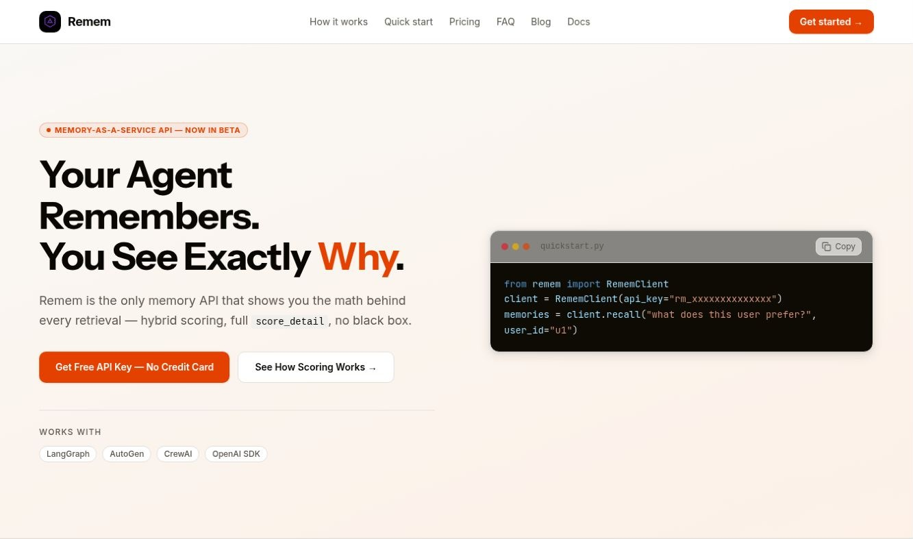

AI ENGINEER
AI agents built
for real work.
I’m Sunday Victor. I build agent memory APIs, multi-agent workflows, and retrieval-based assistants with Python. Explore the systems I’ve built, how they work, and the code behind them.
Open to AI engineering roles · Python · LangGraph · RAG
FEATURED PROJECT / REMEM
An agent should remember
what matters.
I built Remem to give AI agents persistent memory across sessions. Its API handles embeddings, storage, retrieval, and ranking so developers can focus on their agent’s workflow.
Retrieval combines semantic relevance, recency, and importance. Each result includes a score breakdown that makes its ranking easier to understand.

SELECTED WORK
The work behind the words.
My three strongest engineering projects first,
followed by other applications and experiments.
7 projects shown
ABOUT ME
From understanding data
to building agents.
I’m an AI engineer focused on agent memory, structured workflows, and knowledge retrieval.
My work includes Remem, a memory API built with FastAPI and Supabase; IntegrationOS, a LangGraph prototype for API onboarding; and Sunvic, a RAG research assistant using Pinecone, Hugging Face embeddings, and Gemini.
My background in data analysis helps me investigate problems, prepare data, and explain technical results. I now apply those skills to systems that retrieve context, coordinate tasks, and connect language models with external tools.
I’m looking for AI engineering and AI development opportunities where I can contribute to real projects and deepen my experience with evaluation, testing, and deployment. Each project overview explains the implementation and its current limitations.
Agent orchestration
Specialized agents, structured state, task dispatch, and review.
Memory & retrieval
Semantic search, context retrieval, and persistent agent memory.
AI product development
LLM integrations, data workflows, and usable web interfaces.
LET’S CONNECT
Building an AI team?
Let’s talk.
I’m open to AI engineering and AI development roles, including remote opportunities. If your team needs someone working with Python, agent orchestration, memory APIs, or RAG, I’d like to hear about the role.
sunvictor567@gmail.com